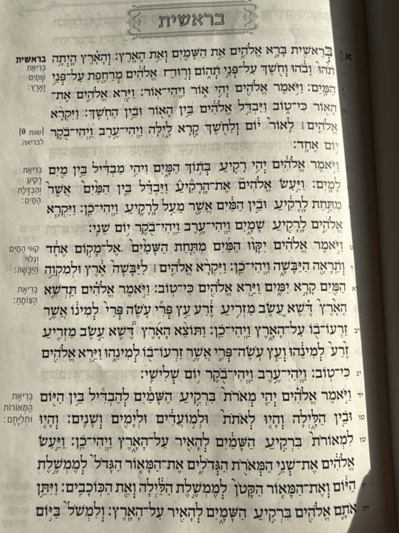
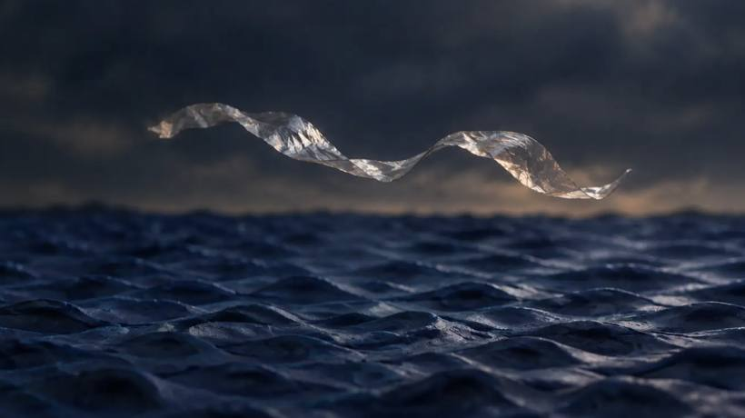

בחרתי בבראשית, פרק א', בדיוק כשאנחנו עוברים לפרשת נח: מבריאת העולם ועד בריאת האדם, בפסוק כ"ז. זה טקסט עוצמתי, עם הרבה רבדים, וכל אחד מהם יכול לפתוח דיון. ובגלל שהוא כל כך מוכר, חשוב במיוחד לבקש מהכלי את הטקסט המדויק והמלא, ולבדוק אותו.
בראשית, פרק א'הסרט הסופי · בסגנון פלסטלינה, עם הנפשה · 2:31פתיחה בחלון נפרד
מאחורי הקלעים
התהליך בשמונה שלבים
כך הפכנו את פרק א' לסרט קצר, ואיך תעשו את אותו הדבר עם הטקסט שלכם, בכלים חינמיים. לחצו על שלב כדי לקפוץ אליו.
זה תמיד השלב הראשון: בוחרים נושא, ובוחרים את הטקסט שיהיה התסריט. כאן הנושא הוא פרשת בראשית, והטקסט הוא פרק א', מהבריאה ועד הולדת האדם.
אחרי הבחירה מתמצתים: קוראים את הטקסט עד הסוף, מנסחים את הרעיון במשפט אחד, ומסמנים את משפטי המפתח. בבראשית התמצות הוביל ל-14 רגעים מתוך הפרק, פריים לכל פסוק או יום. ורק אז מתחילים לעבוד עם Claude, שבמקום לכתוב תסריט שאל ארבע שאלות.

הצילום שהתחיל הכול: קרן שמש על "ויבדל בין האור ובין החשך"
עצמאי או חלק מפרויקט? עצמאי.
איזו זווית? פרק א' בלבד, מהבריאה עד הולדת האדם.
אורך ופורמט? סרט קצר, וגם גרסה אנכית של 60 שניות.
שפה וקול? וידאו וטקסט, מוזיקה, טון מופשט ופואטי, צמוד לפסוקים המקוריים.
למנחים: השאלות שוות יותר מהפרומפט. מי שמבקש "תכתוב לי תסריט" מקבל תסריט גנרי. מי שמבקש "תשאל אותי שאלות עד שיהיה לך מספיק מידע" מקבל סרט שלו.
2מחקר ויזואלי
מחקר ויזואלי: בחירת החומר
החומר משפיע על התחושה. פלסטלינה מרגישה אחרת מדיו, ופחם מרגיש אחרת מאור. לכן לפני שמחליטים, בודקים. שישה סבבי סקיצות. כל סבב בדק את אותו רגע, אדם שנברא ומושיט יד אל האור, בסגנונות שונים. הסגנון שנבחר לא היה אף אחד מהרעיונות הראשונים. הוא נולד מההשוואה.
למנחים: אחרי שנבחרו סקיצות, כל תמונה חדשה נוצרה עם אחת מהן מצורפת כתמונת ייחוס. ככה החומר והדמות נשארו זהים לאורך כל הסרט. תנו למשתתפים לייצר רגע אחד בשלושה סגנונות לפני שהם מחליטים.
3קודים
לכל מילה בפסוק יש מראה וצליל
זה השלב היחיד שבלי AI, והוא הסיבה שהסרט מרגיש מחובר. לפני כל פרומפט החלטנו מה כל מושג אומר, איך הוא נראה ואיך הוא נשמע.
למנחים: הטבלה היא התסריט כולו. בקשו מ-Claude לבנות אותה מהטקסט ומטבלת הקודים, ורק אחר כך צרו תמונה לכל שורה.
5תנועה
מתמונה לשוט: הפרומפט מתאר רק תנועה
כל פריים מאושר הופך לתמונת פתיחה של שוט. המראה כבר נמצא בתמונה, ולכן הפרומפט מתאר רק מה זז ואיך.
"ויהי אור": פריים פלסטלינה שהונפש ב-Kling

ירד מהסרט: סרט הצלופן שייצג את הרוח. יפה בתמונה, מיותר בתנועה.
שוט "ורוח אלהים" עבר שלושה ניסיונות: עם סרט צלופן באוויר, עם עננים כבדים, ועם קרן אור שמבליחה. בסוף נבחרה הגרסה הפשוטה ביותר: רק אדוות על המים. את הרוח עצמה מספר הסאונד.
למנחים: הקרדיטים היומיים מספיקים לשניים או שלושה שוטים. הנפישו רק את הרגעים החשובים, ואת השאר השאירו תמונות עם תנועת מצלמה עדינה (זום איטי) בעריכה.
6סאונד וקריינות
הצליל הוא חצי מהחוויה
צופים סולחים על תמונה לא מושלמת, אבל לא על סאונד רע. בסרט יש שלוש שכבות קול, וכל אחת נבנית בנפרד: מוזיקה, סאונד וקריינות.
אמוזיקה: נבראת בשכבות
החליל פותח לבד, הצ'לו נכנס מתחתיו, הכינור נכנס ב"יהי אור" על הצליל שהופך ממינור למז'ור, וכל יום מוסיף כלי. בסוף מקהלה וכל התזמורת. המוזיקה מספרת את אותו סיפור כמו התמונה: מאחד לרבים.
רוח, רעם, גלים, עלים, ציפורים, לוויתן, ונשימה ראשונה של האדם. אפקט אחד במקום הנכון שווה יותר מעשרה. וכמו בשוט של "ורוח אלהים", לפעמים הצליל מספר את מה שהתמונה לא צריכה להראות.
הקריינות קוראת את הפסוקים, שורה לכל שוט. כאן יש בחירה אמיתית: הקול שלכם, או קול שנוצר ב-AI. קריינות בעברית מקול AI עלולה להישמע עם מבטא או עם הטעמה שגויה, ולכן לטקסט אישי, הקול שלכם הוא כמעט תמיד הבחירה הנכונה.
מקליטים בטלפון, בחדר שקט עם שטיח או וילון, 15 עד 20 ס"מ מהפה. משפט אחד בכל פעם.
מנקים רעשי רקע והד בכלי שיפור קול.
מקשיבים לכל מילה לפני שהיא נכנסת לסרט, ובודקים הטעמה וניקוד.
הקול מעל הכול. כשמישהו מדבר, המוזיקה יורדת. כשהוא שותק, היא יכולה לעלות.
המוזיקה מתחת. בערך רבע מעוצמת הקול, כך שמרגישים אותה ולא שומעים אותה מתחרה במילים.
האפקטים בנקודות. רגע קצר, ואז שקט. שקט הוא גם צליל.
בודקים באוזניות ובטלפון. רוב הצופים ישמעו את הסרט מרמקול קטן של טלפון.
למנחים: בקשו מכל משתתף להקליט את הטקסט שלו בקולו, עוד לפני שיש תמונה אחת. הקול האישי הוא מה שהופך סרטון גנרי לסרטון אותנטי, ולעתים קרובות הוא מספיק כדי לבנות סביבו סרטון של טקסט בלבד.
7עריכה וטקסט
הפסוק נברא אות אחר אות
בגרסה העברית כל אות עולה מתוך טשטוש עם הילת אור, יחד עם הניקוד שלה, בקצב הקריינות. מילה, ואז משפט.
בראשית א', ג'
כל מה שכתוב על המסך זהה מילה במילה למה שנשמע בקריינות.
למנחים: ב-CapCut: Speed להאטת שוטים (בפלסטלינה האטה נראית כמו סטופ-מושן), Dissolve למעברים, ואנימציית טקסט Typewriter או Blur In במקום האותיות שנבראות. גופן מומלץ לעברית עם ניקוד: Frank Ruhl Libre.
8הפצה
ייצוא, עוצמה, העלאה
MP4 לסרט, MP3 נפרד לפסקול, ועוצמת קול שמתאימה לרשתות, כדי שהסרט לא יישמע חלש בפיד.
בסוגריים המרובעים ממלאים את הפרטים שלכם. פרומפטי התמונה והתנועה באנגלית, כי הכלים מבינים אותה טוב יותר.
1
פתיחת שיחה · Claude / ChatGPT
אני רוצה ליצור סרטון קצר על [הטקסט]. לפני שאתה כותב משהו, שאל אותי שאלות על הזווית, הקהל, האורך והשפה החזותית, עד שיהיה לך מספיק מידע. אחר כך הצע שלושה כיוונים שונים לגמרי.
2
סטוריבורד · Claude / ChatGPT
הפוך את הטקסט ואת טבלת הקודים לסטוריבורד: טבלה שבה כל שורה היא שוט.
בכל שורה: מספר השוט, הפסוק או המשפט, מה רואים בתמונה, ומשך בשניות.
השתמש בטקסט המדויק והמלא, בלי קיצורים ובלי שינויים.
3
סקיצת סגנון · Nano Banana
Stop-motion claymation still, handmade plasticine with visible fingerprints. [WHAT HAPPENS IN THE SCENE]. Soft moody lighting, miniature set, poetic, centered, no text.
4
פריים עקבי, עם תמונת ייחוס · Nano Banana
Stop-motion claymation still in the exact plasticine style of the reference image, with NO people. [THE NEW SCENE]. Miniature set, centered, no text.
5
תנועה לשוט · Kling
Stop-motion claymation. [WHAT MOVES AND HOW, ONE ACTION]. Slow push in. No people, no text, continuous, no cuts.
6
מוזיקה בשכבות · Suno
Instrumental, slow, meditative orchestral piece. Starts with a solo flute alone, a low cello joins, then a violin enters and the strings slowly build, ending with a soft choir and full orchestra. No vocals, no drums.